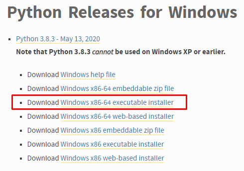

2. Python installation¶
To use scripting in Mimics, Python 3.8 needs to be installed, as explained in this section.
2.1. Configuring Mimics for scripting¶
Scripting features require the following Python package and libraries to run effectively:
Python version must be 3.8.x.
mimics-24.0.0.XYZ-py3-none-any.whl package is required to make autocompletion and quick-help work in the external IDE.
RPyC package is needed to make debugging in external IDE work via the ‘Script Listener’ feature of Mimics. The RPyC package is also required to enable connecting an external IDE-embedded Python console to Mimics via the ‘Script listener’.
Make sure you set the interpreter path to the Python that you have installed, as described in the next section.
Users are required to install a 64-bit version of Python 3.8 which can be obtained from the following website https://www.python.org/downloads/windows/
Step 1: It is recommended to use the executable installer for convenience.
{kind=link}
Step 2: Run the executable in administrator mode and choose the custom installation.
Step 3: Set desired installation location, e.g. C:\Program Files\Python38.
{kind=link}
Step 4: After a successful installation you may close the wizard and start Mimics.
Step 5: Go to File → Preferences → Scripting and make sure that the path to the Python interpreter is set correctly. You should manually set the path to the local directory that contains the Python installation, e.g. C:\Program Files\Python38.
{kind=link}
The Scripting library path is set by default in C:\MedData\Scripts. In that location you can find all the tutorial scripts that are included in the installer. You can set the path to the scripting directory of your preference. Any scripts present in the specified folder are automatically registered in the menu Script → Scripting Library.
2.2. Installing Python autocompletion and quick-help into an external IDE (optional)¶
The editors and the consoles embedded in Mimics come with out-of-the-box autocompletion of Python API, parameters and attributes. However, in order to enable the autocompletion or quick help in an external IDE (such as PyCharm or MS Visual Studio with Python extensions) the following package needs to be installed in the Python interpreter which is used in your active project in the IDE. The installation is done using the standard Python installation tool pip, which is the recommended tool from Python Packaging Authority (PyPA) for installing Python packages. Normally, this tool is present in any recent Python installation (of version >=3.*). The following actions need to be done:
1. Launch the Windows command line (cmd) as Windows Administrator and use the cd command to change the directory to the one that contains the pip.exe file. This is located in the Scripts subfolder of the Python 3.8 installation location.
2. Locate the file mimics-24.0.0.XYZ-py3-none-any.whl. If you installed Mimics in the default location, the file should usually be located inside the folder C:\Program Files\Materialise\Mimics 24.0\Help\API. Copy this file to the folder where the pip.exe file of Step 1 is located.
3. Go back to the Windows command line window of Step 1. Type the following:
pip install mimics-24.0.0.XYZ-py3-none-any.whl
The ‘XYZ’ should be replaced with the exact build number you have in the installation. The mimics-24.0.0.XYZ-py3-none-any.whl can be deleted after the installation has finished.
2.3. Installing extra packages (optional)¶
If desired, install additional Python packages or libraries such as NumPy or SciPy. If you already have installed a Python 3.8 version that contains the external Python libraries of your preference, please follow the instructions above to set as default this Python interpreter. Note, however, your PC requires the Internet connection while doing these installation steps.
To install external Python packages you can use pip, which is the recommended tool from Python Packaging Authority (PyPA) for installing Python packages. If you install a full version of Python 3.8, the pip library is included in the installation folder.
Below you can find a simple example of how to install NumPy and PyQt. First, launch the Windows command line (cmd) as Windows Administrator and use the cd command to change the directory to the one that contains the pip.exe file. This is located in the Scripts subfolder of the Python 3.8 installation location. Then type the following to install NumPy:
pip install numpy
If you need PyQt 5, please note that Mimics 24.0 requires the version to be 5.15. Type the following if you want to install PyQt 5.15.1:
pip install PyQt5==5.15.1
or (if the previous command line fails), type this:
pip install PyQt5==5.15
If you would like to install PyQt versions 4, 6 (if/when it is available), download the corresponding WHL file and store in the folder where pip.exe is. Type the following (the exact version may differ from that in the command 4.11.4):
pip install PyQt4-4.11.4-cp37-cp37m-win_amd64.whl
After those commands, the NumPy and PyQt5 (or its other version) are now normally installed to your system. For more information please visit the following page: https://packaging.python.org/installing/.
It is recommended, before importing PyQt with
import PyQt5.QtWidgets
import PyQt5.QtCore
import PyQt5.QtGui
to initialize PyQt bindings with Mimics utility function
mimics.utils.initialize_pyqt(True/False).
This gives benefits of extended error checking and extra diagnostics of incompatibilities between Mimics hosting application and the given PyQt5 installation at run-time. For example: a versions mismatching related error. See description of mimics.utils.initialize_pyqt() for more details.